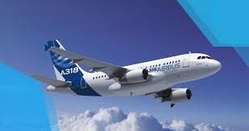

An airplane or aeroplane (informally plane) is a powered, fixed-wing aircraft that is propelled forward by thrust from a jet engine, propeller or rocket engine. Airplanes come in a variety of sizes, shapes, and wing configurations. The broad spectrum of uses for airplanes includes recreation, transportation of goods and people, military, and research. Worldwide, commercial aviation transports more than four billion passengers annually on airliners and transports more than 200 billion tonne -kilometers of cargo annually, which is less than 1% of the world's cargo movement. Most airplanes are flown by a pilot on board the aircraft, but some are designed to be remotely or computer-controlled such as drones.
The Wright brothers invented and flew the first airplane in 1903, recognized as "the first sustained and controlled heavier-than-air powered flight". They built on the works of George Cayley dating from 1799, when he set forth the concept of the modern airplane (and later built and flew models and successful passenger-carrying gliders). Between 1867 and 1896, the German pioneer of human aviation Otto Lilienthal also studied heavier-than-air flight. Following its limited use in World War I, aircraft technology continued to develop. Airplanes had a presence in all the major battles of World War II. The first jet aircraft was the German Heinkel He 178 in 1939. The first jet airliner, the de Havilland Comet, was introduced in 1952. The Boeing 707, the first widely successful commercial jet, was in commercial service for more than 50 years, from 1958 to at least 2013.
There has been a huge loss in the buisness of Airline Buisness.People working as the staff there are starving due to no money.Planes are rusting and are stored in the plane courtyards or on runways.But nowadays there has been a minute increase in airplane travelling.The Government is taking initiative to again start airline buisness with strict measures and onto to some selected places
TheBoeingCompany
Boeing Headquarters Boeing is the world's largest aerospace company and leading manufacturer of commercial jetliners, defense, space and security systems, and service provider of aftermarket support. As America’s biggest manufacturing exporter, the company supports airlines and U.S. and allied government customers in more than 150 countries. Boeing products and tailored services include commercial and military aircraft, satellites, weapons, electronic and defense systems, launch systems, advanced information and communication systems, and performance-based logistics and training.
The AirbusCompany
Airbus is an international reference in the aerospace sector. We design, manufacture and deliver industry-leading commercial aircraft, helicopters, military transports, satellites and launch vehicles, as well as providing data services, navigation, secure communications, urban mobility and other solutions for customers on a global scale
